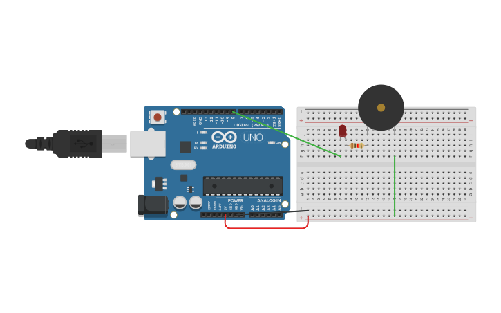

PROJECT 09: LIGHT ALARM
Intruder Detection System
Mission Brief
Protect your valuables! This project creates a security device designed to be placed in a dark drawer or box. If someone opens the drawer and light hits the sensor, the alarm will scream.
Key Components
- Arduino Uno R3
- LDR (Light Sensor)
- Resistor (10kΩ)
- Piezo Buzzer
- Jumper Wires
Circuit Diagram

Pin Connections
| Arduino Pin | Component Connection |
|---|---|
| Pin A0 | Wire to LDR/Resistor Junction |
| Pin 9 | Wire to Buzzer Positive Leg (+) |
| GND | Wire to Buzzer Negative Leg (-) |
Step-by-Step Instructions
- Build the LDR Voltage Divider circuit (LDR + Resistor) connected to A0.
- Place the Piezo Buzzer on the breadboard.
- Connect the Negative leg (usually shorter or marked -) to GND.
- Connect the Positive leg (+) to Digital Pin 9 using a jumper wire.
- Upload the code below.
- Test by covering the sensor with your hand (Silence) and exposing it to light (Alarm).
Arduino Code
/* Project 9 - Light Alarm
* Triggers a buzzer on Pin 9 when light is detected.
*/
const int sensorPin = A0;
const int buzzerPin = 9; // Buzzer connected to Pin 9
// Threshold for "Darkness". Adjust as needed!
int threshold = 600;
void setup() {
pinMode(buzzerPin, OUTPUT);
Serial.begin(9600);
}
void loop() {
// Read the light level
int reading = analogRead(sensorPin);
// Print for debugging
Serial.println(reading);
// Logic: Higher value = Brighter
if (reading > threshold) {
// Light detected! INTRUDER ALERT!
tone(buzzerPin, 1000); // Play 1000Hz sound
} else {
// It is dark (Drawer is closed)
noTone(buzzerPin); // Silence
}
delay(100);
}
How It Works
- Sound Logic:
-
tone(pin, frequency):
This function generates a square wave of the specified frequency (in Hertz) on a pin. 1000Hz is a high-pitched beep. -
noTone(pin):
This stops the sound immediately. Without this, the buzzer would scream forever once triggered! - Inverse Logic:
-
Bright = ON:
In the Night Lamp project, we turned the LED on when it was dark. Here, we turn the alarm on when it is bright (`reading > threshold`).
Expected Output
In the Dark: The buzzer remains silent.
In the Light: As soon as you shine a flashlight on the sensor (or open the "drawer"), the buzzer emits a continuous loud tone.
What You Learned
- How to generate sound using `tone()`.
- Combining analog input sensors with audible output.
- Building a "Normally Closed" style security logic (Alarm triggers on change).
Next Steps / Extension Ideas
Make the alarm more annoying! Program it to beep on and off rapidly (like a truck reversing) or play a melody (like the Star Wars theme) when triggered.